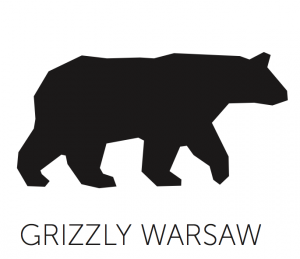
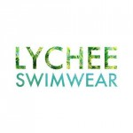

We thank a lot for the material support:
 

Special thanks to Sylwia Kieszkowska and Franek Przeradzki who enriched us with their knowledge; to Patryk Kabaj who helped us in gaining the sponsors and creating this website; to our wonderful friend Zuzia Mazurczak – the best logo designer ever! and of course to our families and friends, for their support and help;
oh, and to Mikołaj Dembiński for his permission